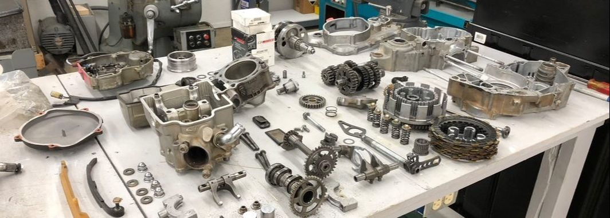

Engine overhauling is a process in which we clean, or service the entire engine of an aircraft, vehicle, bike, or any heavy machines. Engine parts get damaged due to excessive use, wear, heat, or from normal wear and tear. So, we need to overhaul them through technicians.
Probably the biggest disadvantage is cost. Engine rebuilding is a VERY expensive process. It is generally not cost effective compared to other options, such as used engines or even replacement of the vehicle. It is for this reason that engine rebuilding is usually only done for performance cars.
